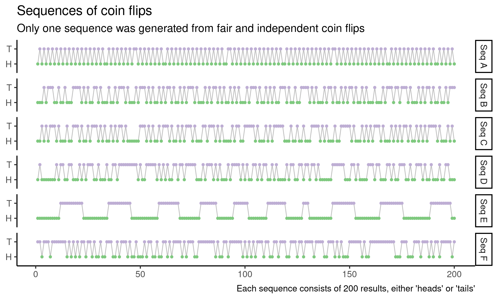
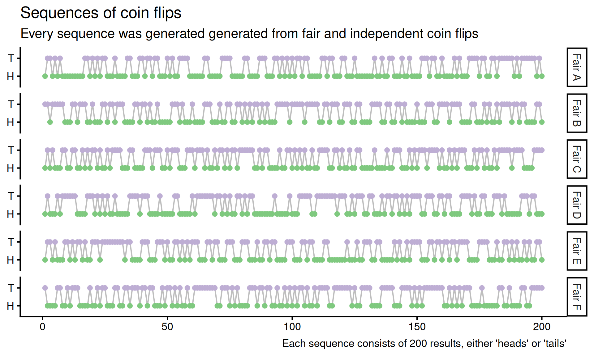
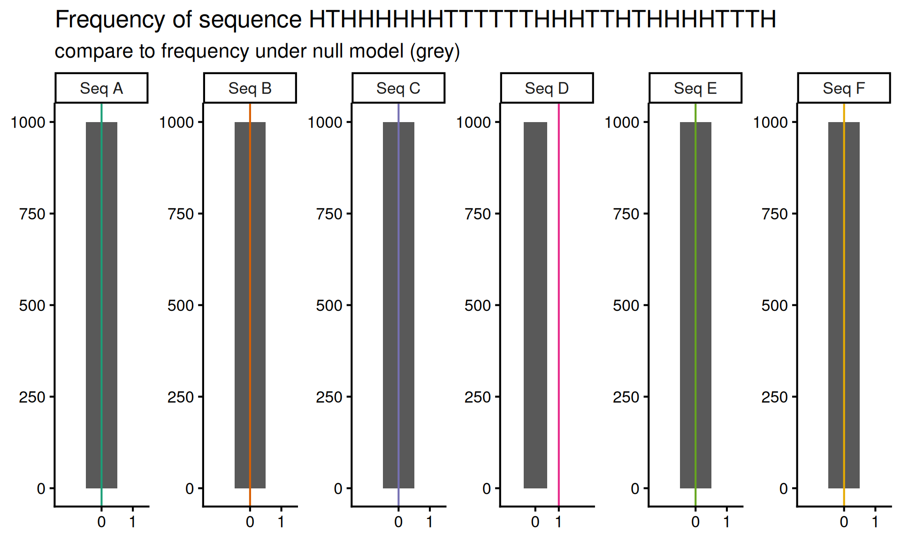
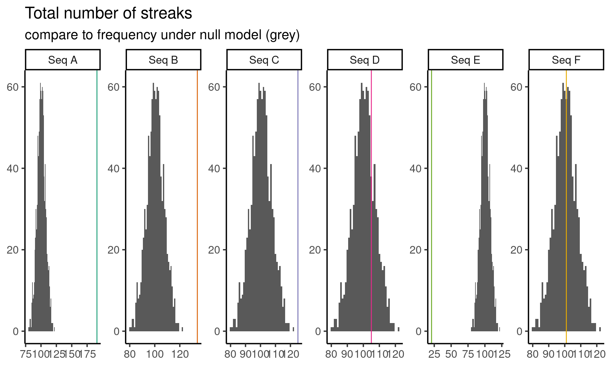

![]()
sequences <- c(
A = "HTHTHTHTHTHTHTHTHTHTHTHTHTHTHTHTHHTHTHTHTHTHTHTTHTHTHTHTHTHTHHTHTHTHTHTHTHTHTHTHTHTHTHTHTHHTTHTHTHTHTHTHTHTHTHTHTHTHTHHTHTHTHTHTHTHTHTHTHTHTHTTHTHTHTHTHTHTHTHTHTHTHTHTHHTHTHTHTHTHTHTHTHTHTHTHHTHTHTHTH",
B = "HHHTHTTTHHTHHTHHHTTTTHTHTHHTTHTHHHTHHTHTTTHTHHHTHTTTHTHTHHTHTHTTHTHHTHTHTTTHTHHHTHTHTTHTHTHHTHTHTHHHTHTTTHTHHTHTHTHHTTTHTHHTHHTTTTHTHTHHHTHTTHTHHTHTHTTHTHHTHTHHHTHHHTHTTTHTTHTTTHTHHHTHTHTTHTHHTHHTHTTT",
C = "HHTHTHTTTHTHHHTHHTTTHTHHTHTTTHTHTHHTHTHTTHTHHHHHHTTTHTHTHHTHTTTHTHHTHTHTTTHTHHHTTHTTTHTHTHHHHTHTTHHTTTTTHTHHHTHTHTTTTTHHHTHHTHHTHHHTTTTHTHTHHHTHHTTTTTHTHHHTHTHTHTTTHTHHHTHTHTHTTHTHHTHTHTHTTTTHTHHHTHTH",
D = "HTHHHHHHHTHTTHHTTHHHTHTHTTTHHTHHHTHHTTHTTTTTTTTTHTHHTTTTTHTHTHTHHTTHTTHTTTTTHHHTHTTTHTHTHHHTHTTTTHTHTHHTTHTHTTHHTHTHHHHTHTTHHTTHTTHTTHTHHHHHHTTTTTTHHHTTHTHHHHTTTHTTHHHTTHTHHTTTHHTHHTTTHTHHTHHHTHHTTHHH",
E = "HHHHHHHHHHHTTTTTTTTTTTHHHHHHHHHHHHTTTTTTTTTTTHHHHHHHHHHHHHTTTTTTTTTTHHHHHHHHHHTTTTTTTTHHHHHHHHTTTTTTTHHHHHHHHHTTTTTTTTTHHHHHHHHTTTHHHHHHHHHHHTTTTTTTTTTTHHHHHHHHHHHHTTTTTTTTTTTHHHHHHHHHHHHHTTTTTTTTTTHH",
F = "TTHTTTHTTTTTTTHTHTHTHTTHTTHTHHTHHTTTHHTHTTTHTHHTHHHTHTTHHTHHTTHTHTTTTHTHTTTHHTTTTTTTTHTHHTTHTTTTTTHTHTHTHTTTHTTHHTTHTTTHHTTTHTTHTTTTHTTTTHHTTTHTHTHHHTTTTTTHTHHTTTTTTTTTTTTHHHTTTHHHTTTHTTTHTHTTHTTTTTHT"
)A hypothesis testing problem
In a data science course that I am currently TA-ing, we just gave out the following problem. Suppose you have the following six sequences of coin flips. Exactly one sequence is generated by repeatedly flipping a fair coin. Which sequence is it?
In this post, I’ll walk through the problem and point out places where it’s easy to have misleading intuition. I encourage readers to try to solve the problem on their own before reading the post.
Alright, onward. To make the problem a little more concrete, let’s start by visualizing the coin flip sequences.
Code
library(tidyverse)
library(glue)
theme_set(theme_classic(16))
observed_nested <- tibble(
name = glue("Seq {LETTERS[1:6]}"),
sequence = sequences
) |>
mutate(
result = str_split(sequence, "")
)
observed_long <- observed_nested |>
select(-sequence) |>
unnest(c(result)) |>
group_by(name) |>
mutate(
index = row_number()
)
observed_long |>
ggplot(aes(x = index, y = result, group = name)) +
geom_line(color = "grey") +
geom_point(aes(color = result)) +
scale_color_brewer(type = "qual") +
facet_grid(rows = vars(name)) +
labs(
title = "Sequences of coin flips",
subtitle = "Only one sequence was generated from fair and independent coin flips",
caption = "Each sequence consists of 200 results, either 'heads' or 'tails'"
) +
theme(
legend.position = "none",
axis.title = element_blank()
)
Eye-balling it
Staring at the sequences, I notice a couple things at first:
Aalways alternates between heads and tails, on every single flipEstays heads for a long time, then switches to tails for a long time, and then the cycle repeats- All of the other cycles switch back and forth between heads and tails fairly often, with some long streaks of all heads or all tails as well
Immediately I think I can rule out A and E, because each flip appears to depend on the previous flips, and this shouldn’t happen when I repeatedly flip a fair coin. Hopefully, I can develop a test later on that will capture this intuition more quantitatively, but for now, I just rule out A and E.
There are some other patterns that look suspicious to me, but I’ve previously learned that my intuition about which sequences are random and which aren’t isn’t very good. Part of the challenge here is that I am mainly looking at non-random sequences in Figure 1, and this doesn’t tell me very much about which patterns are surprising under a random model.
So next I generate six sequences by repeatedly flipping a fair coin (from this point onward, when I refer to a “random sequence” or “a sequence from the null model”, I mean sequence of heads and tails generated by repeatedly flipping a fair coin).
Code
set.seed(27)
sample_sequence <- function() {
outcomes <- c("H", "T")
sample(outcomes, size = 200, replace = TRUE)
}
num_samples <- 6
long_fair <- tibble(
result = map(1:num_samples, \(x) sample_sequence())
) |>
mutate(
name = glue("Fair {LETTERS[1:num_samples]}")
) |>
unnest(c(result)) |>
group_by(name) |>
mutate(
index = row_number()
)
long_fair |>
ggplot(aes(x = index, y = result, group = name)) +
geom_line(color = "grey") +
geom_point(aes(color = result)) +
scale_color_brewer(type = "qual") +
facet_grid(rows = vars(name)) +
labs(
title = "Sequences of coin flips",
subtitle = "Every sequence was generated generated from fair and independent coin flips",
caption = "Each sequence consists of 200 results, either 'heads' or 'tails'"
) +
theme(
legend.position = "none",
axis.title = element_blank()
)
In light of these fair sequences, I can’t really eye-ball anything else that looks suspicious.
Counting heads
The next thing that comes to mind is that, if a coin is fair, then roughly half the flips should be heads and half should be tails. Since I know how to simulate sequences of repeatedly flipped fair coins, I’ll generate a bunch of sequences from this null model, and then compare the number of heads in the observed sequences to the number of heads in the simulated sequences.
Code
count_heads <- function(results) {
sum(results == "H")
}
sample_statistic_under_null <- function(test_statistic, num_samples = 1000) {
map_dbl(1:num_samples, \(x) test_statistic(sample_sequence()))
}
null_distribution <- sample_statistic_under_null(count_heads)
observed_statistics <- observed_nested |>
mutate(
statistic = map_dbl(result, count_heads)
) |>
select(name, statistic)
observed_statistics |>
mutate(
null_sample = list(null_distribution)
) |>
unnest(c(null_sample)) |>
ggplot(aes(x = null_sample)) +
geom_histogram(
binwidth = 1,
center = 0
) +
geom_vline(aes(xintercept = statistic, color = name)) +
facet_wrap(
vars(name),
scales = "free",
nrow = 1
) +
scale_color_brewer(palette = "Dark2") +
scale_x_continuous(breaks = c(80, 100, 120)) +
labs(
title = "Number of heads in each sequence",
subtitle = "compare to number of heads in random sequences (grey)"
) +
theme(
legend.position = "none",
axis.title = element_blank()
)
Code
ci <- quantile(null_distribution, c(0.05, 0.95))Now I observe that, in ninety percent of the sequences from a repeatedly flipped fair coin, the number of heads in the sequence is between the fifth percentile \(q_{0.05} =\) 89 and the ninety-fifth percentile \(q_{0.95} =\) 111. This means that it is unlikely that I will see less than 89 heads or more than 111 heads in a random sequence.
Code
library(gt)
head_count_stats <- observed_statistics |>
mutate(
expected = mean(null_distribution),
observed_quantile = map_dbl(statistic, \(stat) ecdf(null_distribution)(stat)),
p_value = pmin(observed_quantile, 1 - observed_quantile),
likelihood = 0.5^200,
log_likelihood = 200 * log(0.5)
)
head_count_stats |>
select(name, statistic) |>
gt() |>
cols_label(
name = "Sequence",
statistic = "Heads in sequence"
)| Sequence | Heads in sequence |
|---|---|
| Seq A | 102 |
| Seq B | 102 |
| Seq C | 100 |
| Seq D | 99 |
| Seq E | 109 |
| Seq F | 70 |
Since sequence F has only 70 heads, it seems unlikely that sequence F comes from the null model of independent, fair coin flips.
The approach that I have demonstrated above is to compute a rejection region for a test statistic that contains my test statistic \(90\%\) of the time under the null model. This is not the only way to approach the problem. I could also ask, for each sequence, how often do I see a more extreme (i.e. larger or smaller) number of heads in random sequences. This is known as computing a p-value.
Code
head_count_stats |>
select(name, p_value) |>
gt() |>
cols_label(
name = "Sequence",
p_value = "P-value"
)| Sequence | P-value |
|---|---|
| Seq A | 0.349 |
| Seq B | 0.349 |
| Seq C | 0.484 |
| Seq D | 0.466 |
| Seq E | 0.082 |
| Seq F | 0.000 |
When the p-value is small, it means that the number of observed heads in a sequence is either much higher or much lower than typically seen in random sequences. In particular, a p-value of \(p\) (which should always be between zero and one) means that random sequences had as many heads as the mystery sequence only \(p \cdot 100\%\) of the time.
Intuitively, small p-values indicate that data is not compatible with a given model. In this case, the very small p-value for sequence \(F\) indicates that sequence \(F\) is not compatible the random sequence model for coin flips. Sequences \(A, B, C, D\) and to a lesser extent \(E\) are all compatible with the random sequence model.
Misleading intuition
If we stare at the p-values a little longer, we might be tempted to conclude that sequence \(C\) is the most likely to be sampled from the random model, since it has the highest p-value. The intuition goes roughly like this: a low p-value tells us that it is improbable that the data \(X_1, ..., X_n\) came from the null model. Therefore a high p-value tells us that is probable the data \(X_1, ..., X_n\) came from the null model.
This is a very common misconception, and if we are a little bit more careful in interpreting the p-value, we can see where it comes from, and also why this reasoning doesn’t quite work. A low p-value tells us that it is improbable that the observed test statistic \(T(X_1, ..., X_n)\) would be observed by chance under the null model. The probability of seeing the test statistic is not the probability of seeing the data.
The test statistic is one of many possible reductions of the data. Different test statistics can be used to examine the compatibility of the data with different aspects of the null model! One test statistic might have a small p-value, and a different test statistic might have a large p-value, for the same data, under the same null hypothesis. Because of this, statisticians often emphasize that we can never “accept” a null hypothesis; instead, we can only “reject” or “fail to reject” the null hypothesis. This is clunky English shorthand to remind us that p-values tell us about the probability of the test statistic, not the data proper.
Because hypothesis tests function through a test statistic, we cannot use them to compare the relative probability of hypotheses. To make this slightly more concrete, let’s compute the probability of observing sequences \(A, B, C, D, E\) and \(F\) under the null model. This turns out to be \((1/2)^{200}\) for every single sequence! Under the null model, every single sequence is equally likely!
To summarize:
- P-values tell us about the probability of the test statistic, not the data.
- This means we need to pick good test statistics, which is generally a challenging problem.
- The data can be compatible with multiple models at the same time!
Another version of the same misleading intuition
Similarly, if we compute the expected number of heads under the null model, we cannot conclude that sequence \(C\) is the most likely. Knowing that a test statistic \(T\) (the number of heads in a sequence) is close to its expectation (the average number of heads in null model) does not tell us about the probability of the full data under the null. It only tells us about head counts, and head counts do not fully characterize the data!
Code
head_count_stats |>
select(-p_value, -observed_quantile, -likelihood) |>
gt(
caption = "Even though sequence C has exactly the expected number of heads under the null model, every single sequence is equally likely under the null model."
) |>
cols_label(
name = "Sequence",
statistic = "Heads in sequence",
expected = "E[num heads|null model]",
log_likelihood = "log P(data|null model)"
)| Sequence | Heads in sequence | E[num heads|null model] | log P(data|null model) |
|---|---|---|---|
| Seq A | 102 | 100.1 | -138.6294 |
| Seq B | 102 | 100.1 | -138.6294 |
| Seq C | 100 | 100.1 | -138.6294 |
| Seq D | 99 | 100.1 | -138.6294 |
| Seq E | 109 | 100.1 | -138.6294 |
| Seq F | 70 | 100.1 | -138.6294 |
Longest streak of heads in a row
Okay, so we tried one test and it helped us eliminate some options. But we would like to eliminate more. So let’s come up with a new feature to investigate (i.e. test statistic). Let’s look at the longest streak of heads in a sequence. Again, we simulate from the null model to find the null distribution of the test statistic, and plot the results below:
Code
plot_test <- function(test_statistic) {
null_distribution <- sample_statistic_under_null(test_statistic)
observed_statistics <- observed_nested |>
mutate(
statistic = map_dbl(result, test_statistic)
) |>
select(name, statistic)
observed_statistics |>
mutate(
null_sample = list(null_distribution)
) |>
unnest(c(null_sample)) |>
ggplot(aes(x = null_sample)) +
geom_histogram(
binwidth = 1,
center = 0
) +
geom_vline(aes(xintercept = statistic, color = name)) +
facet_wrap(
vars(name),
scales = "free",
nrow = 1
) +
scale_color_brewer(palette = "Dark2") +
theme(
legend.position = "none",
axis.title = element_blank()
)
}
longest_heads_subsequence <- function(results) {
rle_encoded <- rle(results)
head_sequence_indicators <- rle_encoded$values == "H"
if (!any(head_sequence_indicators)) {
warning("No head sequences!")
return(NA)
}
heads_seq_lengths <- rle_encoded$lengths[head_sequence_indicators]
max(heads_seq_lengths)
}
plot_test(longest_heads_subsequence) +
labs(
title = "Longest streak of heads in each sequence",
subtitle = "compare to longest streaks of heads in random sequences (grey)"
)
Here it looks like the longest streak of heads in sequences \(A, B\) and \(F\) is too short, and the long sequence of heads in sequence \(E\) is possibly too long. Let’s eliminate \(A, B, E\) and \(F\) for now and try figure out if \(C\) or \(D\) comes from the random sequence.
Some suspicious patterns
So now I go back to sequences \(C\) and \(D\) and stare at both of them for a while. I like thinking about streaks, because streaks encode dependence, testing for dependence across coin flips seems like a promising idea. Instead of considering the longest streak in the data, let’s consider the total number of streaks in each sequence. Coding this up and running the test yields the following results:
Code
num_islands <- function(results) {
rle_encoded <- rle(results)
sum(table(rle_encoded$lengths))
}
plot_test(num_islands) +
labs(
title = "Total number of streaks",
subtitle = "compare to frequency under null model (grey)"
)
Based on this test we can reject sequence \(C\) since it seems to have too few streaks. This leaves us with a single remaining sequence, \(D\), which might be the random sequence.
But wait! Staring at the sequence \(D\), I realize that it contains the subsequence HTHHHHHHTTTTTTHHHTTHTHHHHTTTH, and this seems suspicious to me. So I decide to do one last test, where the test statistic is the number of occurrences of the subsequence HTHHHHHHTTTTTTHHHTTHTHHHHTTTH.
Code
num_subseq <- function(results, subseq) {
collapsed <- paste0(results, collapse = "")
str_count(collapsed, subseq)
}
pattern1_count <- function(results) {
num_subseq(results, subseq = "HTHHHHHHTTTTTTHHHTTHTHHHHTTTH")
}
plot_test(pattern1_count) +
labs(
title = "Frequency of sequence HTHHHHHHTTTTTTHHHTTHTHHHHTTTH",
subtitle = "compare to frequency under null model (grey)"
) +
scale_x_continuous(breaks = 0:1, expand = 0:1)
Now we reject sequence \(D\) as well, because it has the sequence HTHHHHHHTTTTTTHHHTTHTHHHHTTTH once, but under our null model, we never see this subsequence! At least, not frequently enough to appear in our simulations.
Welcome to testing hell!
This is a good moment to stop, look at all of our results so far, and decide which sequence you think is random. So far we have rejected every sequence! This suggests that we may have made some Type I errors. Are there any tests that you find dubious? Why might be they be misleading?
The fact that we have managed to reject all the sequences is a somewhat subtle issue. The gist is that our final test, the one using HTHHHHHHTTTTTTHHHTTHTHHHHTTTH, is not a particularly good test. This is because all random data has surprising variation. If you look at data, see something surprising, and then develop a hypothesis test to check if that surprising thing is indeed surprising, your number of false positives (Type I errors) will skyrocket. If you’re curious to understand this issue, I wrote a blog post that goes into more detail.
In the meantime, here are two questions worth some contemplation:
- To avoid circular tests for surprising data, do you think it is sufficient to choose a test statistic before looking at your data?
- Do you think it is a good idea to plan an entire data analysis before looking at your data?
Coda
Follow up challenge: multiple testing
Overall, we did \(4 \cdot 6 = 24\) total hypothesis tests. Suppose we did all tests at the \(\alpha = 0.05\) level, such that each test had probability \(\alpha\) of type I error.
Collectively, across all of our tests, what is the chance of at least one false positive result? Does it make sense to assume that tests results are independent?1
Does the number of tests seem like a problem to you? Can you think of any solutions?
Followup challenge: unknown probability of heads
One of the six sequences was generated by repeatedly flipping a weighted coin, with probability \(p \in (0, 1)\) of heads, where \(p\) is unknown.
Do you have any suspicions about which sequence it was? Why?
Can you still use a similar approach to figure out find the sequence from a weighted coin? Why or why not?
Footnotes
If you want to treat tests as dependent, you may not be able to calculate the precise probability of one or more false positive, but you can bound it using Fréchet’s inequality: \(P(A \text{ or } B) \le P(A) + P(B)\) for possibly dependent events \(A\) and \(B\).↩︎